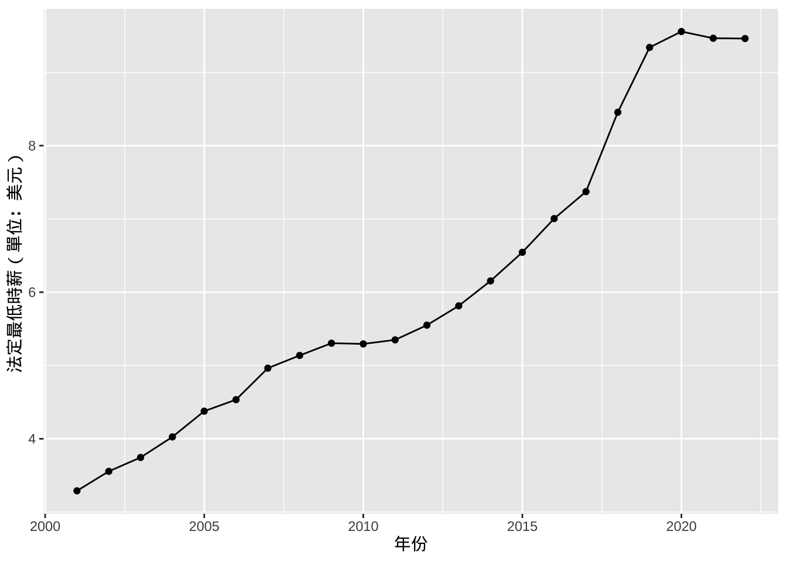
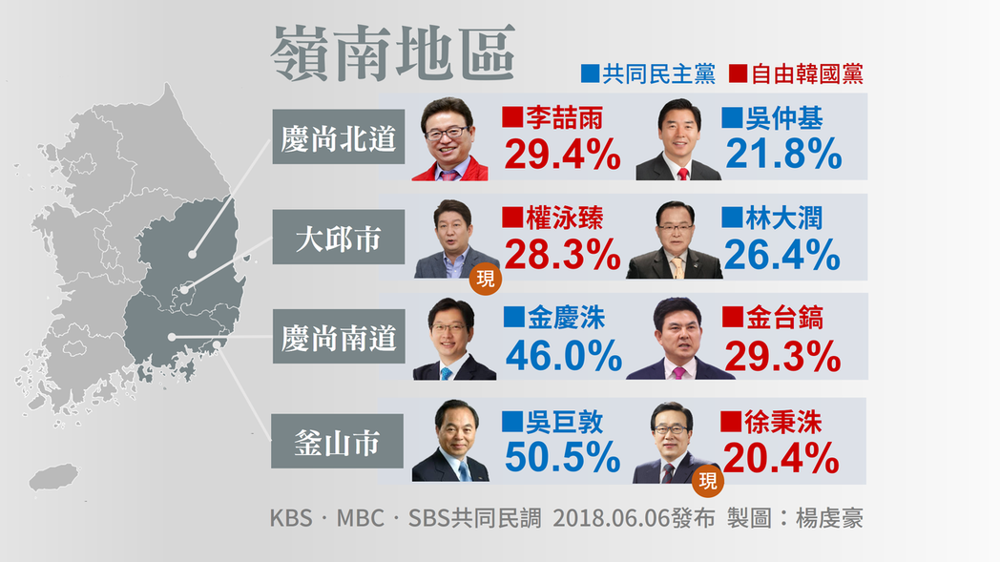
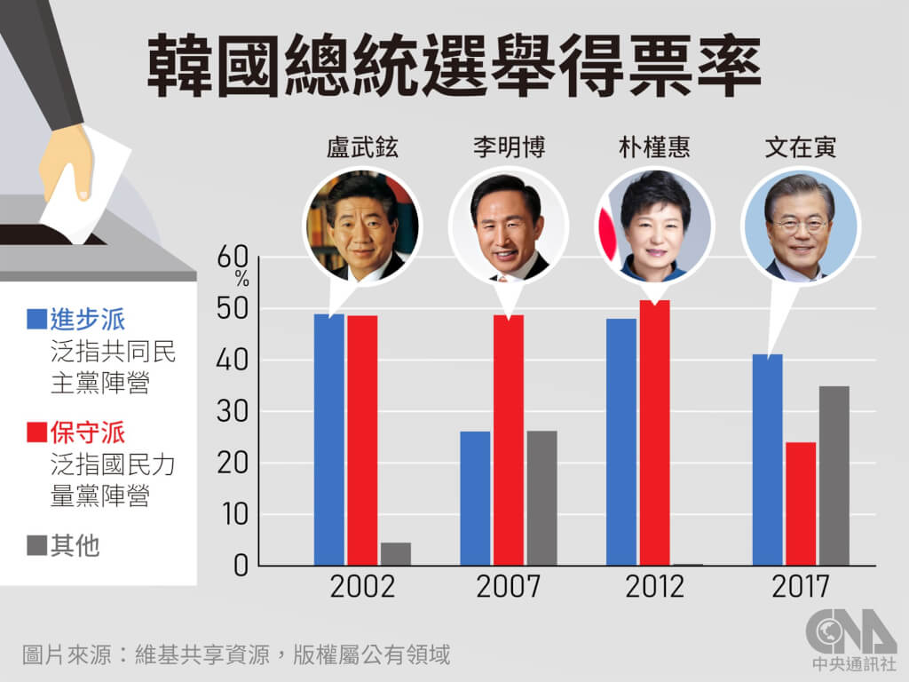
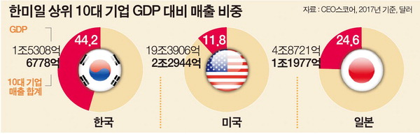
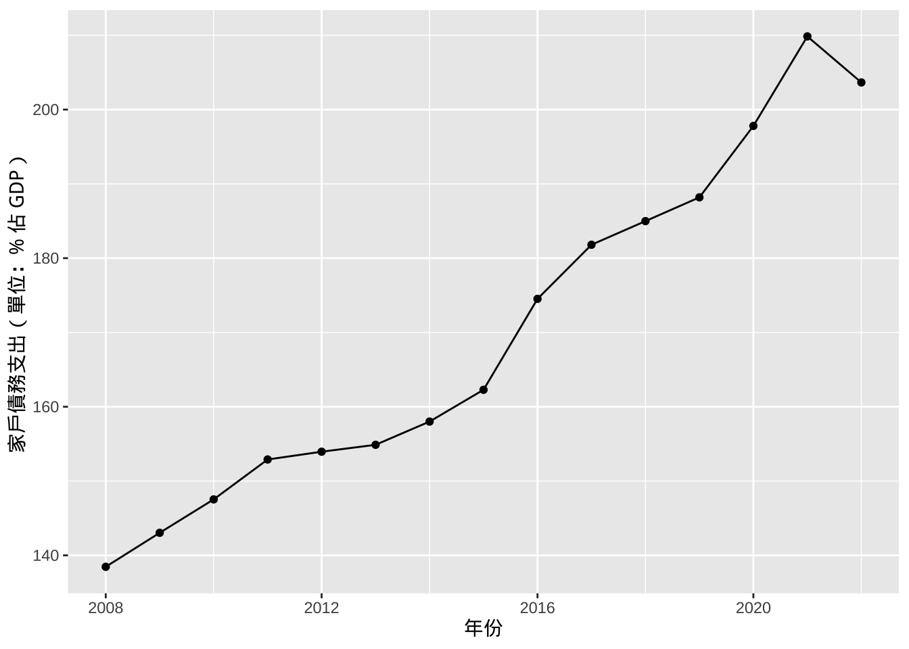
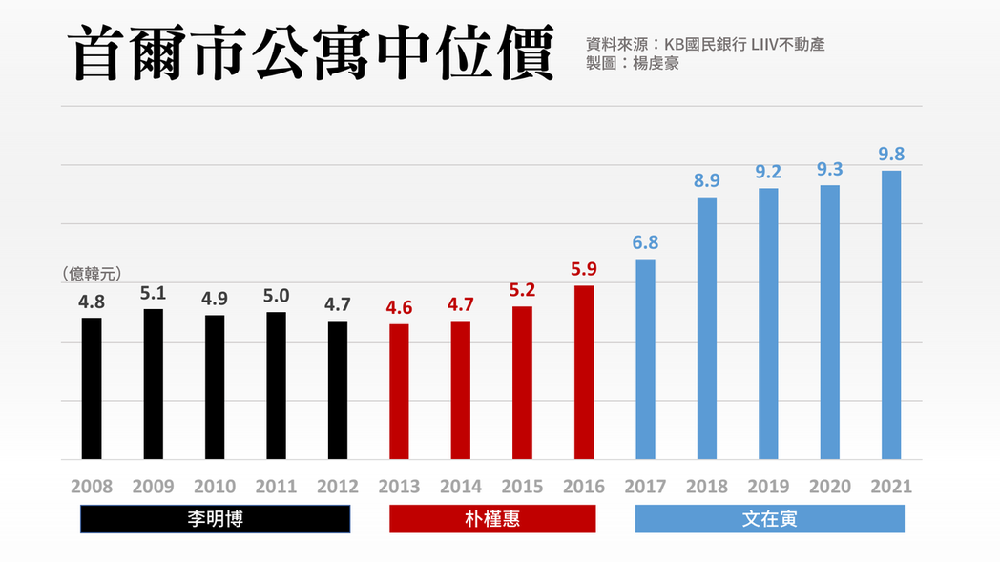
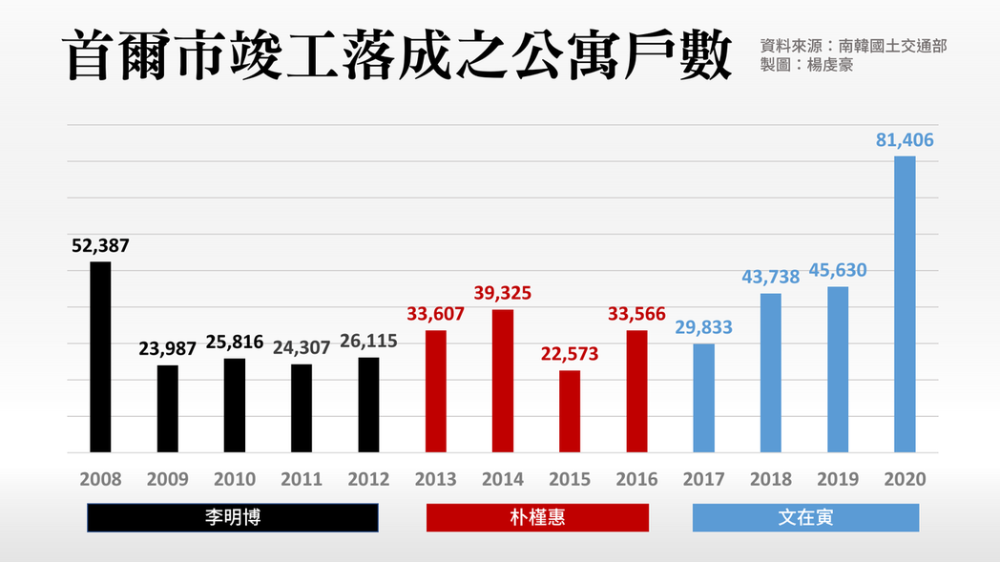

韓國民主化演講逐字稿筆記—南韓政經社現況
poilitical economy
此心得基於政大朱立熙教授開設之「韓國政治與民主化」課程邀請之楊虔豪記者之演講；為了記錄這場演講，我以接近逐字稿加上個人意見的方式撰寫本篇文章。
政治現況：第四次政黨輪替
南韓分為左派（進步政營）與右派（保守政營）兩大意識形態1。右派是由 1970、80 年代軍事獨裁政權演變而來，鼓吹與美國維持緊密關係，並認為朝鮮半島的分裂係由於北韓勢力的入侵，可見右派在安保與外交上維持反共立場，對於北韓展現強硬態度；在經濟上則強調以市場經濟優先，韓國前總統朴正熙於在任期間扶持財閥，使南韓經濟突飛猛進，躍升亞洲四小龍之位，所以右派陣營主張投資交易限制越小越好，政府不應限制經濟活動。
左派政營則是民主化期間與軍事政權對立的勢力，包含彼時的學運圈、工運份子。左派的外交思維與右派不同，甚至可以說是截然不同，其認為朝鮮半島分裂的原因導因於美國的入侵，造成南北韓互相對立，因此主張與北韓展開交流與對話，並降低北韓對南韓的敵意，融洽相處最後趨向統一；經濟上左派主張重視平等、福利與分配優先，左派指出在朴正熙將財閥扶植起來後，財閥佔據眾多資源，透過向海外輸出產品與服務賺取高額利潤，但政府並未將這些財富均等地給予需要的人民，進而導致南韓貧富差距日漸擴大，因此應該限縮財閥權利與規模，且在必要時政府需要介入避免經濟體系漫無秩序。

2022 年韓國總統大選由保守派以些微差距贏得進步派，重新奪回政權，迎來韓國民主化以降第四次政黨輪替。早在 2016 年韓國前總統朴槿惠遭人揭發其放任閨蜜崔順實干政，且引起諸多弊端，如威脅財閥必須捐款給崔順實建立的基金會，遭民眾上街抗議要求下台。此後，保守派便一直居於劣勢，文在寅便在此潮流中支持率扶搖直上，在 2017 年總統大選獲勝，為韓國第三次政黨輪替。

疫情衝擊經濟導致民怨四起
新冠疫情爆發後，南韓出現諸多經濟困難等現象，主要原因在於南韓在疫情前十分仰賴觀光業，但在疫情後為維持人民健康，政府加強邊境管制措施，致使外國觀光客無法進入南韓，造成依賴觀光業的產業生靈塗炭。4由於南韓經濟不斷下滑之故，造成民眾認為執政黨並未協助民眾度過難關，民怨四起下導致進步派聲量跌落。
曹國與安哲秀
作為以批評執政黨著名的學者、支持進步派應該打擊貪污腐敗並締造年輕族群生活良好社會的曹國，諸多初出社會的大學生乃至高中生皆支持曹國並視其為明日之新星。2012 總統大選由文在寅對上朴槿惠時，曹國便輔選文在寅；2017 年文在寅任命曹國為彼時青瓦台之首席秘書官，後提名其為法務部部長。
文在寅總統於其在內亟欲推動司法改革，縮減檢察官權力。韓國近 50、60 年以來，檢方有極大的權力直接搜查住處，並任意冠上罪名並起訴；且檢方「辦小不辦大」的陋習，若為保守派的重大弊端，檢方通常會睜一隻眼閉一隻眼，但若是進步派存在程度較小的金錢來往，檢方多會鑽牛角尖，大幅度、選擇性的偵辦。因此，推動檢警搜查權改革的重擔便落在身為法學家且為法務部部長的曹國肩上，文在寅又任命尹錫悅擔任檢察總長，期望兩者能夠相互配合。就在事情看似順利發展時，曹國面臨多項指控：
- 女兒大學推甄舞弊：曹國之女遭指控其大學推甄時提交不實備審資料，且掛名大學論文作者 。5
- 妻子投資幽靈金流：曹國之妻經爆料投資數十億韓元至一個幽靈私募基金，負責人為其妻之弟，疑似有洗錢之虞。6
綜上，曹國聲量開始下滑，支持者與反對者對立嚴重，從而重傷進步派形象，造成原本進步派支持者逐漸脫離。
另一名造成進步派選票流失的政治人物為安哲秀。2023 年臺灣總統大選選戰期間，有論者將臺灣總統候選人柯文哲與安哲秀進行類比7。同時具有醫學與工程師身份的安哲秀在創立安哲秀研究所(AnnLab)後，2010 年後如同柯文哲一般開始展露頭角，對於政治事務發表意見，希望能憑一己之力改變社會，並獲得許多民眾支持。然而因安哲秀缺乏地方民意基礎，因此退出 2011 年首爾市長選舉。
為了帶領追隨者選舉，安哲秀與進步派合作形成「新政治民主聯合（새정치민주연합）」。2015 年時，文在寅與安哲秀討論推派何人選擇總統時出現意見上的分歧，文認為應該以進步派的風格吸引民眾支持，安則認為應該走中間路線，提出吸引兩邊選民的政見，但卻遭人質疑該想法十分曖昧與模糊，後安哲秀退出並另起「國民之黨（국민의당）」。2016 年底因朴槿惠政府倒台後，文在寅與安哲秀皆表示欲參選總統，且互相不讓步，形成進步派分裂的局面。
儘管安哲秀選舉時打了一副漂亮的牌，但因其安保政策模糊而遭人稱變色龍。2016 年底，前總統朴槿惠決議讓美國前往南韓部署薩德系統(Terminal High Altitude Area Defense, THAAD)，但中國則堅決反對，稱薩德系統防禦範圍可以擴及北京與東三省，並表示若部署該系統將會採取報復措施。然而朴槿惠執意設立，最終遭到中國的報復，如南韓在中企業遭無預警調查、K-POP 團體多場中國演唱會因此取消。當時薩德推動時文在寅與安哲秀皆表示反對，但 2017 年總統大選時安哲秀卻有了一百八十度大轉變，轉而支持薩德系統且未敘明改變立場原因，且有論者認為安哲秀是為了獲得保守派選票而有如此作為。
爾後，安哲秀便開始向保守派靠攏，在 2022 年總統大選選舉期間，初期認為可以獨當一面殺出一條路，但民調不斷下滑下便一直向保守派提出整合，最後又與保守派意見不合，後自動退選，致使尹錫悅吸收部分安哲秀選票並以些許差距贏得選舉。
經濟現況：財閥立國與治國
提及南韓經濟就不得不提到財閥，諸多國際知名品牌如 Samsung、現代汽車、LG、樂天等都是韓國的大財閥。
| 排名 | 1960 | 1965 | 1975 | 1985 | 1994 | 2012 | 2018 |
|---|---|---|---|---|---|---|---|
| 1 | 三星 | 三星 | 三星 | LG | 三星 | 三星 | 三星 |
| 2 | 三湖 | LG | LG | 現代 | 現代 | 現代 | 現代 |
| 3 | 凱豐 | 雙龍 | 現代 | 三星 | LG | SK | LG |
| 4 | 大韓 | Panbon | 韓進 | SK | 大宇 | LG | SK |
| 5 | LG | 三湖 | 曉星 | 大宇 | SK | 樂天 | 斗山 |
| 6 | 東洋 | 三洋 | 雙龍 | 雙龍 | 雙龍 | 韓進 | 韓進 |
| 7 | 極東 | 東洋 | 大宇 | 韓進 | 韓進 | 浦項鋼鐵 | 樂天 |
| 8 | 大韓玻璃 | 大韓 | 斗山 | 韓華 | 起亞 | GS | 錦湖韓亞 |
| 9 | 東瑞 | 凱豐 | 東亞建設 | 大林 | 韓華 | 韓華 | 浦項鋼鐵 |
| 10 | 泰昌 | 和信 | 新東亞 | 曉星 | 樂天 | 斗山 | 韓華 |
1970 年代韓國經濟落後且基礎建設差，前總統朴正熙扶植為了使經濟成長從而扶植財閥，鼓勵外銷、提供租稅減免、協助企業接洽客戶。然而此項政策卻造成財閥的規模隨著時間推演越來越大，到近年財閥的勢力富可敵國，如此依賴財閥治國的現象，導致財閥的營收牽一髮而動全身。此外，財閥獲得過多且近乎壟斷性的資源，使其影響力龐大乃至干預政治，對政府施加威脅，如不增設缺額導致失業率、影響媒體報導內容等。

下圖為韓國法定最低時薪變化圖，可以看到從 2001 年以來至今，薪資明顯有向上攀升的趨勢。每年六月韓國都會開啟勞資政三方薪資談判對話，依照當年上半年度之物價水準調整下年基本時薪，可以想見進步派會偏袒勞方，保守派則會偏好資方。但今年出現一個奇怪的現象，保守派調整的幅度是近五年的新高。南韓有龐大的工會力量，聯合向政府與資方進行談判，在可以發動抗爭、罷工等籌碼存在時，資方與政府將會畏懼而增加調整幅度。
儘管基本時薪不斷上升，但家戶債務支出(household debt)也越來越高。下圖是 2001 年至 2022 年韓國家庭債務佔 GDP 的比例，在 2022 年攀升到 200 %，主要原因可能來自於 2004 年南韓卡債危機、2013 年銀行放寬放貸標準等因素。還有一種可能是源自南韓補習文化，家長對於孩子的投資不斷上升，造成負債如滾雪球一般越來越大。11

韓國房價問題亦是韓國人民痛苦的根源，以及諸多政治、經濟與社會的潘朵拉盒。下圖顯示了韓國首爾市房價中位數，在文在寅上任後，房價飆升至 2021 年約 2500 萬新台幣的高水準。保守派認為文在寅政府執政期間，無法控制房價問題在於房屋市場供不應求，儘管文政府一直執行打房政策，如標記江南地區為炒房過熱區域，限定房貸額度，且持有不動產所得稅水準提高。南韓的個體戶在近幾年逐漸增加，尤其時首都圈個體戶的首爾、京畿道、仁川市佔了近五成，過去十幾年興建的公寓都是三、四戶為單位，個體戶此時僅能找到昂貴的房產。此外，新冠疫情爆發後，南韓銀行為了刺激消費，下修基準利率，從原本的 1.25 % 降至 0.5 %，許多投機客藉此機會借貸購入房產，然而政府卻沒有意識到房地產需求增加之下，供應並未跟著增加，從而導致房價上漲。

進步派持的立場與保守派截然不同。下圖為首爾市竣工落成之公寓戶數，可以看出文在寅政府執政期間興建並落成的公寓戶數遠比前政府還要高，進步派主張供過於求並非房價居高不下的主因，因為興建一棟公寓需要經過一道又一道的行政程序，且要包含收工後的驗收等，整個期間約二至三年，因此文在寅政府時期落成的公寓是早在朴槿惠政府即決定好的。綜合上述觀點，進步派指出必須要將房屋市場以長遠的時間觀察，朴槿惠在執政期間取消許多對投機客的限制措施，從而導致熱錢湧入房屋市場，逼迫房價攀升。

社會現況：被詛咒的裙帶關係
在韓國，裙帶關係（족벌주의）可以說是貫穿整個政治、經濟與文化發展的重大脈絡。韓國人十分注重血緣、地緣、學歷、姻緣等社群網絡關係，如 PK 地區（即釜山與慶南）與 TK 地區（即大邱與慶北）。由於這種網絡關係幾乎已經刻印在韓國人的基因裡，無論在工作上或愛情上，裙帶關係成為一條韓國人永遠無法斷開的鎖鏈。
另外，媒體在韓國具有舉足輕重的地位。近年來儘管許多人開始搭上「韓劇」的流行列車，諸多知名電視台如 tvN 也製作了一系列令人無法忘懷的韓劇（如《機智醫生生活》），然而隨著網路的發達與串流平台（如 Netflix、LineTV 等）興起，韓國老三台 KBS、MBS 與 SBS 以及其他電視台的的收視人數開始下滑。
Footnotes
右派勢力的聚集地為今天南韓的慶尚南道、慶尚北道、釜山、大邱，代表政黨為當前（2023 年）的國民力量；左派則在全羅南道、全羅北道、光州等地支持聲量較大，代表人物如金大中。當時因為全斗煥發動政變，並發起諸多血腥鎮壓，導致湖南地區的民眾對於保守政營恨意極大，因此在投票上會更加集中支持進步派候選人。↩︎
南韓政壇期中考（3）：保守鐵票倉的翻盤危機. 轉角國際 Udn Global. https://global.udn.com/global_vision/story/8663/3187201↩︎
韓國變天 保守派尹錫悅以些微差距當選總統. 中央社 CNA. https://www.cna.com.tw/news/firstnews/202203100013.aspx↩︎
值得一提的是，新冠肺炎於全球肆虐之時，諸多國家如美國、歐洲等國，對於國內觀光業均有補貼，或至少要求承租方不得漲價；南韓卻並未採取如此舉措，飯店業者在無旅客進入時，仍須支付高昂租金，且政府未提供減免、補貼措施。↩︎
後曹國政局（下）：從女兒特權延燒的「大學入學教改」. 轉角國際 Udn Global. https://global.udn.com/global_vision/story/8663/4125017↩︎
後曹國政局（上）：收押教授妻子的74億「幽靈金流」. 轉角國際 Udn Global. https://global.udn.com/global_vision/story/8663/4125016↩︎
林庭瑤專欄：柯文哲會成為「台灣安哲秀」？. 風傳媒. https://www.storm.mg/article/4942073?mode=whole↩︎
국내 10대 기업 매출비중 GDP의 44%. 국제대학교 https://www.kookje.co.kr/news2011/asp/newsbody.asp?code=0200&key=20180906.22012001876↩︎
OECD (2023), “Real minimum wages”, https://stats.oecd.org/index.aspx?DataSetCode=RMW (accessed on 24 December 2023).↩︎
金敬哲. (2019). 韓国行き過ぎた資本主義:「無限競争社会」 の苦悩.↩︎
OECD (2023), “Household debt” (indicator), https://doi.org/10.1787/f03b6469-en (accessed on 24 December 2023).↩︎
南韓打房失敗啟示錄：首爾與他的無殼絕望世代. 轉角國際 Udn Global. https://global.udn.com/global_vision/story/8663/6187687↩︎
南韓打房失敗啟示錄：首爾與他的無殼絕望世代. 轉角國際 Udn Global. https://global.udn.com/global_vision/story/8663/6187687↩︎
Reuse
Citation
BibTeX citation:
@online{sung2023,
author = {Sung, Anthony},
title = {韓國民主化演講逐字稿筆記—南韓政經社現況},
date = {2023-12-24},
url = {https://yueswater.com/posts/2023-12-24-korean-democratization/},
langid = {en}
}
For attribution, please cite this work as:
Sung, Anthony. 2023.
“韓國民主化演講逐字稿筆記—南韓政經社現況.” December 24,
2023. https://yueswater.com/posts/2023-12-24-korean-democratization/.